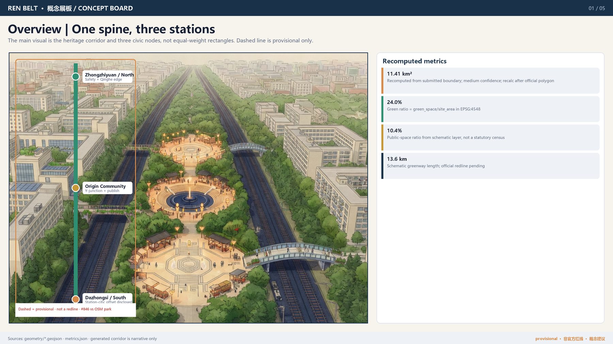
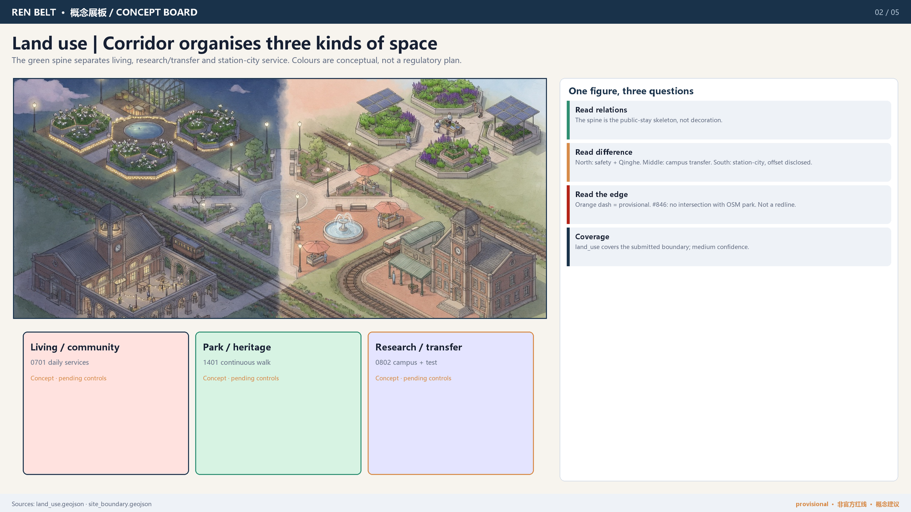
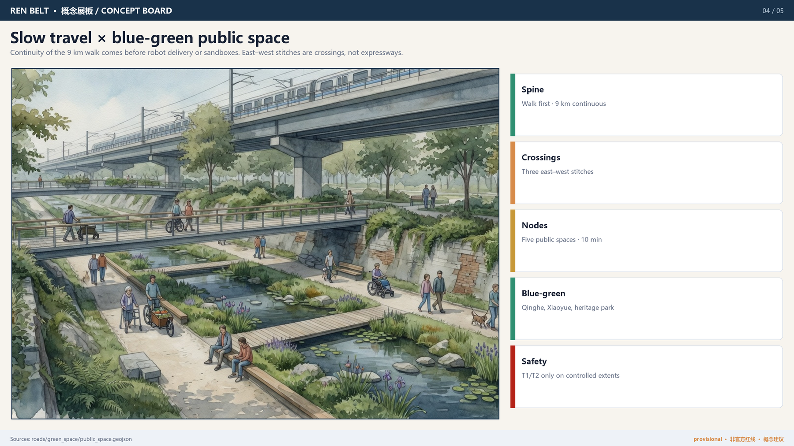
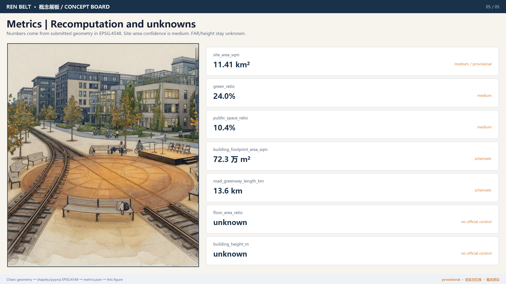

Centennial Jing-Zhang REN BELT: a people-first AI urban design
The Qinglongqiao Y-junction is translated into an operable public-space structure: one 9 km heritage spine, three stations, two wings, and four time marks. Twelve scenario cards, twelve implementation cards, six case transfers and four landmarks are written in this text so a reviewer need not open geometry/ or visual/assets/. All spatial claims are conceptual suggestions.
Centennial Jing-Zhang REN BELT: a people-first AI urban design
Design Basis and Source List
The first authority is the Haidian branch announcement of the Centennial Jing-Zhang AI Innovation Belt international urban-design call Source. Machine-readable materials live in brief/site-package/ Source. Agent tasks come from the open-call taskbook Source. Use classes follow data/source_registry.json Source. data/processed/agent_fact_pack.md is a reading aid, not a new authority Source.
Every public fact cited in this text is registered in sources.json with publisher, direct URL, date, licence/reuse and limits. The review model does not receive geometry/ or visual/assets/ (public issue #2170). Case tables, twelve scenario cards, four landmarks, twelve implementation cards, inclusion rules and the annual calendar are therefore written here. JSON files are recomputable copies only.
Community opinions adopted. PR #508 P0/P1 asked for readable agent.1–6 artefacts, a rights ledger, rebuilt drawings and no empty rhetoric. #1927 still caps consecutive evidence markers at three; the full index is in tables. #1061: who, for whom, when, how far, with what, and how to stop. #1062: hash LF bytes. #953: refresh via the scaffold path allowed by current main scripts.
Disclose, do not invent a redline (#1029 / #846). Submitted SITE-001 and the three KEY_AREA polygons are the repository's provisional rectangles Source. Key-area source: Source. They are geometry_role=provisional_constraint and official_boundary=false. OSM is a location reference only Source. Site boundary: Spatial data. Issue #1029: the Dazhongsi rectangle centroid is near Beijing North Station, about 2.26 km from Dazhongsi metro station. Issue #846: the provisional overall-design polygon does not intersect the OSM Jingzhang Relics Park (nearest about 412.5 m). This package does not treat OSM as an official redline and does not draw a “better” polygon that would leave PROV-SITE-001. The brief's named Dazhongsi four-quadrant walk is kept as a named conceptual task on card JZ-07, with the station marked outside the provisional rectangle. Area is in metrics.json Metric. Key-area layer: Spatial data.
Public point-in-time facts (re-verify before statutory use): Heritage Park phase 1 opened June 2023 (Tsinghua East Rd–Zhichun Rd, about 2.4–2.5 km, 16.8 ha); the planned 9 km belt would serve about 70 communities and 450,000 residents Source. Haidian 2025: 3.111 million residents, 430 km², GDP 1,369.14 billion CNY, 37 universities, 2.0058 million talents Source. 1,300+ AI firms, 74 registered large models, core AI industry over 350 billion CNY Source. Jing-Zhang HSR opened 30 December 2019; the old line between Xueyuan South Rd and the North 5th Ring went underground Source. Beijing Jingzhengfa 2023-14 supports Haidian City Brain 2.0 and a public computing centre Source. Changping Line south extension phase 1 opened February 2023 Source.
Standards: announcement and taskbook Standard, urban-design measures Standard. Regulatory-plan and architectural depth: Standard and Standard. Land-use classification: Standard. Gaps: Depth.
Context photos: Source. Locomotive photo: Source. Generated vignettes: Source. Card copies: Source.

Three-Level Scope Framework
Work follows the announcement's three scopes Source. The coordinated research area (~43.6 km²) asks where industry and urban form should go. The overall design area (~11.4 km²) asks how renewal and structure land. The key areas (~368.4 ha: Zhongzhiyuan ~192.1 ha, Origin Community ~104.3 ha, Dazhongsi ~72.0 ha) ask how public space and scenes are detailed. Transmission logic: Depth.
Structure: one spine, three stations, two wings, four marks.
- Spine: a continuous walkable, cyclable, stayable 9 km heritage greenway Spatial data.
- Stations: Zhongzhiyuan (north, stack autonomy and safety), Origin Community (middle, near-campus transfer and open source), Dazhongsi (south, station-city and international exchange). Count: Metric.
- Wings: Xiaoyue River scene wing (daily life, care, public experience) and Zhongguancun service wing (capital, IP, firm services). They meet at Origin Community as a managed public interface.
- Marks: 1905/1909 construction, 1949 Tsinghuayuan station, 2019 HSR and undergrounding, 2026 this call. Content is re-reviewed yearly Source.
No area, ratio or project count enters a formal conclusion unless it can be recomputed from submitted geometry Depth.

Coordinated Research Area: Industry and Future City Research
Industry numbers are the verified public figures already cited Source. The proposed chain is five checkable stages: campus origin → open collaboration → firm transfer → controlled scene test → international communication or exit. Beiwai Community, Future Science City, Huairou Science City and the Economic-Technological Development Area are named partners only; this package invents no cross-district contracts.
Name, logo and visual identity (agent.1)
Name: Centennial Jing-Zhang REN BELT. REN is the pinyin of 人 (person). The English subtitle is People-first rail belt; REN is not forced as an acronym of Rail. Master mark: assets/brand/ren-belt-logo.svg. Reverse: ren-belt-logo-reverse.svg. Sheet: ren-belt-brand-sheet.svg.
- Minimum digital width 96 px, print 24 mm; reverse mark on dark grounds.
- Palette: Rail Navy
#19324A, Rail Amber#D78B4A, Origin Green#2F8F72, Signal Gold#C79838, Paper#F7F4EE. - Chinese system sans, English Arial; no font files shipped.
- Wayfinding: one sign, one purpose, one action. History, community credit and sponsorship stay in separate columns.
- The mark is an original submission direction, not a government emblem Source.
Global cases and transfer mechanisms (agent.2)
| ID | Case | Checkable mechanism | Interface on this belt | Not done |
|---|---|---|---|---|
| C1 | Palo Alto / Silicon Valley | Ground-floor mix of start-ups, capital and public stay | Dazhongsi shared hall (S05, L-04) | No form copy |
| C2 | Vector Institute / Toronto | University–industry lab on a public node | Origin transfer street (S07, JZ-04) | No plaque promised |
| C3 | Pangyo Techno Valley | Ten-minute walk from rail | Three east–west stitches (JZ-01/07/10) | No FAR invented |
| C4 | Jurong Lake District | Blue-green network linking work, life, learning | Heritage spine + Qinghe (S06, JZ-02) | No twin claimed built |
| C5 | Munich digital factory | Shared low-threshold training and test space | Zhongzhiyuan test yard (S02, T2, JZ-03) | No factory conversion promised |
| C6 | Shenzhen Bay | Open events + public space + scene tests | AI Week and sandbox (S10, JZ-11/12) | No government calendar claimed |
Four operating rules: space hosts only permitted public nodes; money is split into civic budget, park operation and market events and is published; talent entry is open to campuses, developers, residents and carers; compute and data use least privilege, civic quota, withdrawal and human takeover.

Overall Design Area: Urban Renewal and Regulatory-Plan-Level Urban Design
Regulatory-plan depth is required, but FAR, height, density and setbacks are unpublished and stay unknown Standard.
- One spine: continuity first, events second Spatial data. Green ratio: Metric.
- Three stitches: slow crossings at Zhongzhiyuan, Origin and Dazhongsi. Road centre-lines are schematic Spatial data.
- Four clusters: Qinghe gateway, near-campus transfer, station-city south, Xizhimen–Xueyuan Road. Conceptual shares: research/innovation ~22%, open green ~20%, living/community ~26%, pending official controls Depth.
Retain / renovate / new is a grading logic, not a parcel verdict Depth. FAR stays unknown Metric.
Detailed Design of Key Areas
All three polygons are provisional Spatial data. Recomputed area: Metric. Depth item: Depth.
1) Zhongzhiyuan AI acceleration area (~192.1 ha, north). Public anchors are Qinghe and the North 5th Ring gateway. Actions: a reachable innovation plaza and controlled test yard (S02, S06, T2, T3); keep the river green wedge; add one east–west stitch. Depends on official boundary, blue line, flood control and campus rights. Stop: no safety officer, or water/flood thresholds exceeded — keep walking and shade only.
2) Beijing AI Origin Community (~104.3 ha, middle). Public anchors are the near-campus edge and Tsinghuayuan station. Actions: Origin Plaza with lights that can be switched off (S01, S12, L-03); transfer street with non-digital booking (S07, JZ-04); campus–park stitch. Depends on campus edge, ground-floor tenure and heritage review. Stop: complaints over threshold or content failing review — take down that item, do not close the walk.
3) Dazhongsi AI cluster (~72.0 ha, south). The brief names four-quadrant walkability at Dazhongsi metro. This package also discloses that the provisional rectangle sits near Beijing North Station, about 2.26 km from that metro (#1029). Drawings stay inside the rectangle. JZ-07 keeps four-quadrant connectivity as a conceptual task that cannot enter engineering review until official polygons and rail-protection conditions exist. Inside the rectangle, light wayfinding, replaceable display frames and a shared civic/pitch hall can start (S05, S08, L-04). Stop: if approvals or tenure fail, keep a signage pilot only.

AI Innovation Ecosystem, Personas, and AI+ Scenarios
At least five personas. Each has a spatial reply, a non-digital door and a prohibition.
| Persona | Typical day | Spatial reply | Non-digital door | Forbidden |
|---|---|---|---|---|
| Open-source developer | Code by day, publish at night | Origin hall S01 | Paper sign-up, on-site number | No personal tracks |
| Start-up / OPC | Book space, test, ask IP | Test yard S02, street S07 | Counter booking | Compute needs separate grant |
| Firm / international visitor | Pitch, host, recruit | Dazhongsi hall S05 | Human host, paper agenda | Marks need clearance |
| Nearby resident (children, older people) | Commute, walk, services | Spine S04, living street S09 | Paper map, voice, staff | No commercial profiling |
| Campus staff / students | Transfer, walk, interpret | Street S07, Tsinghuayuan S11 | Human guide, paper | Campus data needs consent |
| Disabled / digitally excluded / night workers | Reach, rest, night safety | Continuous accessible path, night light | Phone, staff, voice line | No smartphone gate |
Twelve full scenario cards (agent.3)
| ID | Scene | Space | Purpose | Operation | Data boundary | Acceptance |
|---|---|---|---|---|---|---|
| S01 | Open-source hall | North of Origin Plaza | Publish and collaborate | Biweekly; staff open and review | Human review; no tracks | ≥2 events/quarter; complaints in 48 h |
| S02 | Safety sandbox | Zhongzhiyuan plaza | Controlled evaluation | Booking; safety officer; one-key rollback | De-identified samples; allow-list | Rollback ≤5 min; no officer = stop |
| S03 | Edge-compute stop | Public nodes | Time-shared compute | Booking; civic quota ≥20% | Least privilege; no raw personal data | Monthly uptime ≥90%; fail audit = disconnect |
| S04 | Slow-travel guide | Heritage park | Wayfinding and access | Paper maps in parallel; volunteers | Individual location off by default | Access ≥90%; paper maps stocked |
| S05 | International pitch hall | Dazhongsi shared hall | Show and transfer | Monthly; sponsorship published | Cleared content; human host | Civic slots ≥20% |
| S06 | Qinghe low-carbon corridor | River edge | Blue-green + monitoring | Quarterly; human check on alerts | Aggregates only | Stop if water threshold exceeded |
| S07 | Near-campus transfer street | Origin Community | Incubation and IP advice | Campus booking; rotating counsel | Share after grant; non-digital booking | Prices posted; satisfaction ≥80% |
| S08 | Data-element parlour | Dazhongsi | Compliance advice, not a trading floor | Published rules; third-party audit | Purpose-limited, traceable, withdrawable | Appeal in 15 working days |
| S09 | Living-service street | Community retail node | Resident services | Assembly; counter; night window | No commercial profile | Low-income discount; 100% prices posted |
| S10 | Global AI Week route | Belt public space | Annual open | Booking + walk-in | Accessible route; paper sign-up | ≥1 fully civic event |
| S11 | 1949 memory guide | Tsinghuayuan–spine | Memory and learning | Guide + paper/voice; yearly heritage review | Portrait/relic clearance; opt-out | Three doors present; take down one item if disputed |
| S12 | Origin Plaza art | Origin Community | Switch-off identity and gathering | Night hours; manual off | No face capture; brightness/noise caps | Uptime ≥95%; over-cap = lights off |
Three test scenes (human review, rollback, appeal).
| ID | Test | Extent | Safety gate | Stop |
|---|---|---|---|---|
| T1 | Unmanned delivery / robots | Limited Dazhongsi–Origin streets, not into dwellings | Allow-list, speed cap, escort | Any collision or open complaint |
| T2 | Governance-agent sandbox | Inside Zhongzhiyuan plaza; no live signals | Officer, one-key rollback, public issue list | No watch or failed audit |
| T3 | Qinghe–Xiaoyue monitoring | Blue-green sensors, aggregates only | No individual ID; human check | Water or flood threshold |
North hosts S02/S06/T2/T3; middle S01/S07/S11/S12; south S05/S08/T1; the whole spine S03/S04/S09/S10. Node count: Metric. All are conceptual suggestions Standard.
Land Use, Building Scale, and Retain-Renovate-Demolish Strategy
land_use.geojson covers the submitted boundary without gaps or overlaps Spatial data. Coverage: Metric. Schematic footprints ~723,000 m² Metric. Heritage railway, Tsinghuayuan station and Juesheng Temple stay first. No parcel-level RRD verdict Depth. Height stays unknown Metric.
Transport, Rail, Municipal Infrastructure, and Public Services
Policy is rail access plus slow travel, not new expressways. Line 13 already parallels the old corridor; under-viaduct space is part of the park Source. Changping south extension (Feb 2023) serves Xueyuan Road Source. Concept: organise “rail + walk + public service” nodes at Dazhongsi, Zhichun Road, Wudaokou and Changping south-extension stops. Greenway length: Metric. No invented redlines or pipes Depth. City Brain 2.0 is a municipal policy citation, not a promised works Source.
Blue-Green Network, Public Space, and Urban Character
The 9 km heritage spine is the skeleton, discussed against Qinghe, Xiaoyue River, Wanquan River and the northern moat Source. Recomputed green ~2.735 million m² Metric; public space ~1.189 million m² Metric. These bind to the provisional boundary and must be recalculated. History layer and contemporary layer stay labelled apart Source.
Four landmarks, honour rules, component kit (agent.4)
| ID | Landmark | Role | Honour rule | Components |
|---|---|---|---|---|
| L-01 | 9 km heritage spine | Structural public space | Heritage Spine; history vs contemporary split | Weathering-steel traces, year marks, voice guide, low night light |
| L-02 | Tsinghuayuan memory point | 1949 learning door | Yearly heritage review; take down one item | Paper+voice, sit-down teller, braille/high-contrast map, human guide |
| L-03 | Origin Plaza | Brand and gathering | Origin Mark; open-source and community credits | Y-rail paving, switch-off light, movable stage, modular seats |
| L-04 | Dazhongsi civic hall | International + civic share | Signal Bell; sponsor vs public columns | Replaceable frames, multilingual signs, shared hall, night safety |
Honours are source-checked first. Every component can be replaced, switched off, and used without a phone.
Renewal Projects, Implementation Policy, and Phasing
All twelve items are conceptual. Near term (2026–2030): reversible light pilots. Mid (2030–2035): stitches that need redlines and tenure. Far (2035–2040): belt-wide governance only after audits. Count: Metric. Phasing layer: Spatial data.
Twelve implementation cards
| ID | Project | Phase / cost | Owner | Dependencies | Acceptance | Stop |
|---|---|---|---|---|---|---|
| JZ-01 | Continuous park walk | Near / low | District renewal or parks operator | Park permit; rail/heritage/fire | Continuity ≥90%; yearly check | Two failed safety checks → segmented pilot |
| JZ-02 | Qinghe blue-green corridor | Mid / medium | Water, parks, street | Flood, water quality, utilities | Storage points professionally accepted | Close tests if thresholds exceeded |
| JZ-03 | Zhongzhiyuan plaza | Near / low | Park operator + street | Space permit, event safety, clearance | ≥1 civic event/quarter; satisfaction ≥80% | Two weak quarters → change programme |
| JZ-04 | Origin transfer street | Mid / medium | Park / campus / street | Campus edge, tenure, ground floor | Non-digital booking; fees public | Pause sharing if complaints exceed cap |
| JZ-05 | Origin Plaza art | Near / low | Street + arts body | Art permit, copyright, night noise | Uptime ≥95%; manual off | Over noise/light cap → off |
| JZ-06 | Tsinghuayuan guide | Near / low | Heritage / culture operator | Heritage, content, access | Three doors; yearly review | Take down one item, not the route |
| JZ-07 | Dazhongsi four-quadrant walk | Mid / high | Rail operator + transport | Official polygon, rail protection, road redline, utilities | Only after engineering review | Signage pilot if approvals fail |
| JZ-08 | Native-AI retail street | Mid / medium | Street + market actors | Tenure, mix, environment | ≥10% civic service bays | Rebalance if affordability drops |
| JZ-09 | Public compute nodes | Near / medium | Public compute or park operator | Energy, classified protection, personal data | Civic hours ≥20%; human takeover | Disconnect on failed audit |
| JZ-10 | Xueyuan Road green face | Mid / medium | Transport / parks / street | Road redline, planting, access | Continuous access; seasonal care | Close that segment if obstacles remain |
| JZ-11 | Global AI Week route | Near / low | Brand operator + street | Space permit, safety, copyright | Public calendar; ≥1 civic-only event | Indoor or cancel if plan fails |
| JZ-12 | Open-scene governance sandbox | Far / high | District data office + auditor | Policy grant, data safety, fairness audit | Yearly public audit; every scene has exit | Stop automation if audit fails |
Inclusion
| Group | Spatial standard | Non-digital service | Metric |
|---|---|---|---|
| Disabled people | Continuous accessible path, rests, braille/voice; 24 h obstacle handling | Paper, human guide, voice line | Reach ≥90%; 48 h close |
| Low-income | Civic hours, free public space, posted prices | Counter booking, civic quota | Quota ≥20% |
| Carers and children / older people | Visible care point, pram/wheelchair bay, toilet, water | Staff, family hours | Family satisfaction ≥80% |
| Night workers | Safe light, night toilet, quiet path | Night staff, emergency phone | Patrol 100%; response ≤15 min |
| Digitally excluded | No QR-only signs; staffed desk | Paper, phone, human | Non-digital door 100% |
Loop: quarterly assembly → open day → yearly third-party fairness audit, published.
Annual operations (agent.6)
| Quarter | Programme | Audience | Output | Access |
|---|---|---|---|---|
| Q1 | Open Call Lab | Developers, students, community | Problem list and civic prototypes | Free; paper; accessible session |
| Q2 | Blue-Green Repair Week | Residents, carers, parks | Flood/shade/obstacle close-out | Offline assembly; night session |
| Q3 | Global AI Belt Week | Firms, visitors, public | Pitches, tours, open day | Booking + walk-in; civic ≥20% |
| Q4 | Public audit and memory walk | Public, auditors, heritage | Fairness audit and guide review | Public report; human/paper/voice |
Funnel: collect → prototype → controlled test → human review and fairness audit → procure/transfer or exit. A co-governance committee (street, park, campus, residents) meets quarterly. Each test has one operator and one safety officer with a kill switch. Complaints acknowledged in 48 h, answered in 15 working days. Not a government commitment Depth.
Metrics, Area Recalculation, and Compliance Matrix
Class 1, recomputed in EPSG:4548 from submitted geometry: site area ~11.4128 million m² Metric, green area and ratio, public-space area and ratio, footprints, greenway length, three key-area areas, land-use coverage and three land-use shares. Because the boundary is provisional, site-area confidence is medium. Class 2 (FAR, height) stays unknown. Class 3 (participation mix, civic quota, complaint close-out) is an audit set, not a spatial control Depth.
The compliance matrix covers announcement 1.3 / 1.4 / 1.5 (16 items) and agent.1–agent.6 (6 items). Standards and design-depth matrices cover six standards and fifteen required depths.

Risk, Copyright, and Compliance
Only public or cleared sources Source. Boundaries are provisional Source. All spatial suggestions are “conceptual suggestion / reference scheme / material for professional teams” Standard.
Copyright: text, geometry, figures, A3/A0 and offline HTML are generated by the declared agent (caulif) or use registered sources. Qinglongqiao photo: N509FZ, CC BY-SA 4.0. Park locomotive: XiaYZ2023, CC BY-SA 4.0. Location raster: OpenStreetMap contributors, ODbL 1.0. Corridor / plaza / section illustrations are original generated images for narrative only, not survey. System font fallbacks; no font files shipped. See report/copyright_statement.md.
Still missing: official polygons, regulatory controls, building tenure, road redlines, utilities, heritage control lines, investment owners. Logged in assumptions.json Depth.
References
- brief/public-brief.md; brief/site-package/design_brief.json; agent_taskbook.json; provisional_boundaries.geojson and basis.md
- data/source_registry.json; data/processed/agent_fact_pack.md and companion CSVs
- Haidian government profile (2025 figures, updated April 2026)
- Beijing Daily / People's Daily reports on Heritage Park phase 1 and the 9 km plan (2023–2026)
- Beijing Jingzhengfa 2023-14
- Beijing government Changping Line south-extension service notice (2023-02-03)
- GitHub: PR #508; Issues #1029, #846, #1927, #2170, #1061, #1062, #953